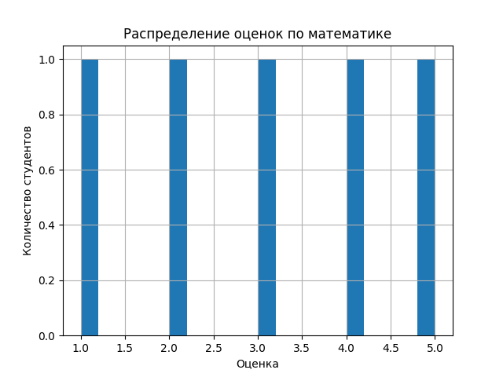
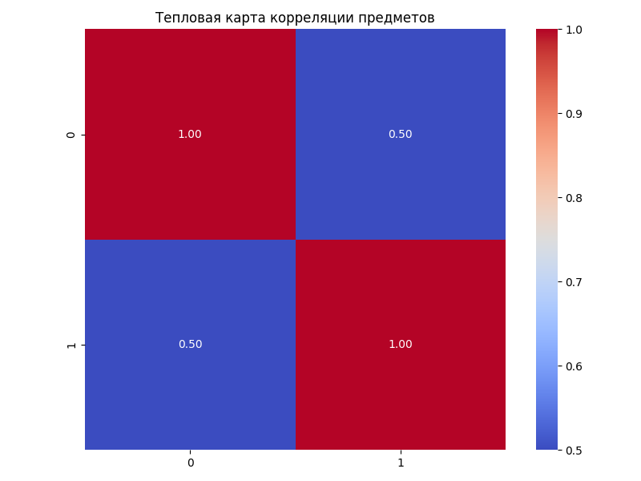
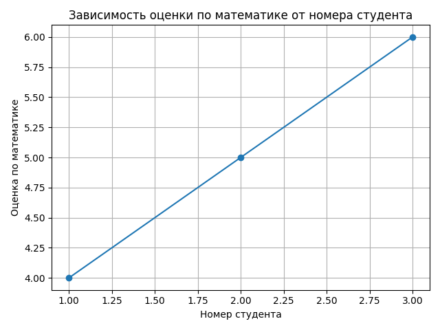

Проект 4. Основы NumPy массивы и векторные операции
Цель
Освоить базовые приёмы работы с библиотекой NumPy для численных вычислений и анализа данных: создание и преобразование массивов, выполнение векторных и матричных операций, применение функций статистики и нормализации, а также построение графиков для визуализации результатов. Дополнительно закрепить навык разработки через тестирование с использованием pytest.
Описание задачи
Требовалось реализовать набор функций для работы с массивами и матрицами, а также модуль анализа учебного датасета с оценками студентов. Основная цель — получить корректные вычисления (операции NumPy, статистика, нормализация) и сформировать графики, при этом добиться прохождения всех автотестов.
Как была решена
- Функции реализованы на основе стандартных возможностей NumPy:
arange,random.rand,reshape,transpose. - Векторные и матричные операции выполнены в векторизованном виде без циклов:
+,*,np.dot, оператор@, функцииnp.linalg. - Датасет загружался через
pandas.read_csv()с преобразованием вnumpy.ndarray, затем вычислялись статистики и выполнялась Min-Max нормализация. - Визуализации строились через
matplotlib/seabornи сохранялись в директориюplots/. - Корректность проверялась тестами pytest, что позволило быстро выявлять ошибки в формах массивов и вычислениях.
Нюансы при решении
- Форма массивов: многие функции ожидают одномерный вход, поэтому при чтении данных или тестах важно использовать
flatten()приndim > 1. - Точность вычислений: для обратной матрицы и решения СЛАУ корректнее использовать проверки типа
np.allclose, так как есть погрешности float. - Нормализация: при Min-Max важно корректно обрабатывать диапазон
(max - min)и не смешивать типы данных. - Сохранение графиков: нужно явно закрывать фигуры (
plt.close()), чтобы не копить объекты и не ломать последовательные тесты/запуски. - Пути к файлам: лучше сохранять графики в относительные пути внутри проекта (
plots/), чтобы код переносился между машинами.
Задание
- Подготовить окружение и структуру проекта, установить зависимости (
numpy,pandas,matplotlib,seaborn,pytest). - Реализовать функции для работы с массивами (создание,
reshape,transpose). - Реализовать векторные операции без циклов (сложение, умножение, поэлементное умножение,
dot-product). - Реализовать матричные вычисления (умножение,
det,inv, решениеAx=b). - Загрузить CSV-датасет и выполнить статистический анализ и Min-Max нормализацию.
- Построить и сохранить визуализации (гистограмма, heatmap корреляций, линейный график).
- Добиться прохождения всех тестов с pytest.
Код лабораторной работы:
import os
import numpy as np
import pandas as pd
import matplotlib.pyplot as plt
import seaborn as sns
def create_vector() -> np.ndarray:
"""
Создать массив от 0 до 9.
Returns:
numpy.ndarray: Массив чисел от 0 до 9 включительно
"""
return np.arange(0, 10, 1)
def create_matrix() -> np.ndarray:
"""
Создать матрицу 5x5 со случайными числами [0,1].
Returns:
numpy.ndarray: Матрица 5x5 со случайными значениями от 0 до 1
"""
return np.random.rand(5, 5)
def reshape_vector(vec) -> np.ndarray:
"""
Преобразовать (10,) -> (2,5)
Args:
vec (numpy.ndarray): Входной массив формы (10,)
Returns:
numpy.ndarray: Преобразованный массив формы (2, 5)
"""
return vec.reshape(2, 5)
def transpose_matrix(mat) -> np.ndarray:
"""
Транспонирование матрицы.
Args:
mat (numpy.ndarray): Входная матрица
Returns:
numpy.ndarray: Транспонированная матрица
"""
return mat.T
# ============================================================
# 2. ВЕКТОРНЫЕ ОПЕРАЦИИ
# ============================================================
def vector_add(a, b) -> np.ndarray:
"""
Сложение векторов одинаковой длины.
Args:
a (numpy.ndarray): Первый вектор
b (numpy.ndarray): Второй вектор
Returns:
numpy.ndarray: Результат поэлементного сложения
"""
return a + b
def scalar_multiply(vec, scalar) -> np.ndarray:
"""
Умножение вектора на число.
Args:
vec (numpy.ndarray): Входной вектор
scalar (float/int): Число для умножения
Returns:
numpy.ndarray: Результат умножения вектора на скаляр
"""
return vec * scalar
def elementwise_multiply(a, b) -> np.ndarray:
"""
Поэлементное умножение.
Args:
a (numpy.ndarray): Первый вектор/матрица
b (numpy.ndarray): Второй вектор/матрица
Returns:
numpy.ndarray: Результат поэлементного умножения
"""
return a * b
def dot_product(a, b) -> float:
"""
Скалярное произведение.
Args:
a (numpy.ndarray): Первый вектор
b (numpy.ndarray): Второй вектор
Returns:
float: Скалярное произведение векторов
"""
return np.dot(a, b)
# ============================================================
# 3. МАТРИЧНЫЕ ОПЕРАЦИИ
# ============================================================
def matrix_multiply(a, b) -> np.ndarray:
"""
Умножение матриц.
Args:
a (numpy.ndarray): Первая матрица
b (numpy.ndarray): Вторая матрица
Returns:
numpy.ndarray: Результат умножения матриц
"""
return a @ b
def matrix_determinant(a) -> float:
"""
Определитель матрицы.
Args:
a (numpy.ndarray): Квадратная матрица
Returns:
float: Определитель матрицы
"""
return np.linalg.det(a)
def matrix_inverse(a) -> np.ndarray:
"""
Обратная матрица.
Args:
a (numpy.ndarray): Квадратная матрица
Returns:
numpy.ndarray: Обратная матрица
"""
return np.linalg.inv(a)
def solve_linear_system(a, b) -> np.ndarray:
"""
Решить систему Ax = b
Args:
a (numpy.ndarray): Матрица коэффициентов A
b (numpy.ndarray): Вектор свободных членов b
Returns:
numpy.ndarray: Решение системы x
"""
return np.linalg.solve(a, b)
# ============================================================
# 4. СТАТИСТИЧЕСКИЙ АНАЛИЗ
# ============================================================
def load_dataset(path="data/students_scores.csv") -> np.ndarray:
"""
Загрузить CSV и вернуть NumPy массив.
Args:
path (str): Путь к CSV файлу
Returns:
numpy.ndarray: Загруженные данные в виде массива
"""
# Подсказка: используйте pd.read_csv(path).to_numpy()
return pd.read_csv(path).to_numpy()
def statistical_analysis(data) -> dict:
"""
Посчитать статистику одномерного массива.
Args:
data (numpy.ndarray): Одномерный массив данных
Returns:
dict: Словарь со статистическими показателями
"""
return {"mean": np.mean(data),
"median": np.median(data),
"std": np.std(data),
"min": np.min(data),
"max": np.max(data),
"25_percentile": np.percentile(data, 25),
"75_percentile": np.percentile(data, 75)}
data = pd.read_csv("data/students_scores.csv").to_numpy()
def normalize_data(data) -> np.ndarray:
"""
Min-Max нормализация.
Args:
data (numpy.ndarray): Входной массив данных
Returns:
numpy.ndarray: Нормализованный массив данных в диапазоне [0, 1]
"""
return (data - np.min(data)) / (np.max(data) - np.min(data))
# ============================================================
# 5. ВИЗУАЛИЗАЦИЯ
# ============================================================
def plot_histogram(data) -> None:
"""
Строит гистограмму распределения оценок по математике.
Args:
data (numpy.ndarray): Данные для гистограммы
"""
if data.ndim > 1:
data = data.flatten()
plt.figure()
plt.hist(data, bins=20)
plt.title("Распределение оценок по математике")
plt.xlabel("Оценка")
plt.ylabel("Количество студентов")
plt.grid(True)
plt.savefig("/Users/monomraz/PycharmProjects/python_2/LR-2/plots/plot_histogram.png")
plt.close()
def plot_heatmap(matrix) -> None:
"""
Строит тепловую карту корреляции предметов.
Args:
matrix (numpy.ndarray): Матрица корреляции
"""
plt.figure(figsize=(8, 6))
sns.heatmap(
matrix,
annot=True,
fmt=".2f",
cmap="coolwarm",
square=True
)
plt.title("Тепловая карта корреляции предметов")
plt.tight_layout()
plt.savefig("/Users/monomraz/PycharmProjects/python_2/LR-2/plots/plot_heatmap.png")
plt.close()
def plot_line(x, y) -> None:
"""
Строит график зависимости: студент -> оценка по математике.
Args:
x (numpy.ndarray): Номера студентов
y (numpy.ndarray): Оценки студентов
"""
plt.figure()
plt.plot(x, y, marker="o")
plt.title("Зависимость оценки по математике от номера студента")
plt.xlabel("Номер студента")
plt.ylabel("Оценка по математике")
plt.grid(True)
plt.tight_layout()
plt.savefig("/Users/monomraz/PycharmProjects/python_2/LR-2/plots/plot_line.png")
plt.close()
Визуализация
Гистограмма

Тепловая карта корреляции

Линейный график

Выводы
В ходе лабораторной работы были реализованы функции для выполнения численных вычислений и анализа данных с
использованием NumPy. Освоены операции создания, преобразования и обработки массивов, векторные и матричные
вычисления, статистический анализ и нормализация данных. Реализованы визуализации с сохранением результатов в plots/.
Корректность функций подтверждена прохождением тестов pytest.